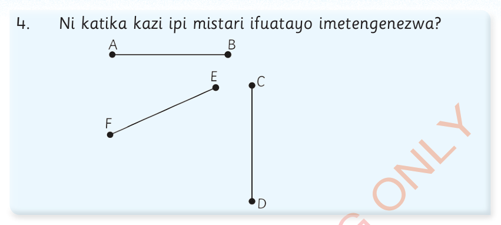
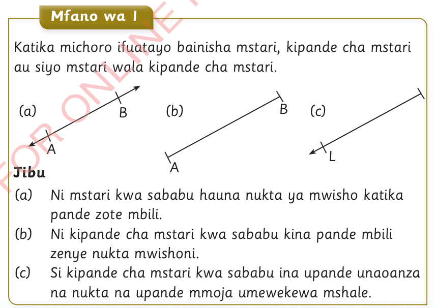

4.
Ni katika kazi ipi mistari ifuatayo imetengenezwa?

Sifa za kipande cha mstari
Kipande cha mstari kina sifa zifuatazo:
- (a) Kimenyooka
- (b) Hakina unene
- (c) Kina mwanzo katika nukta moja na mwisho kwenye nukta nyingine
Mfano wa kwanza
Katika michoro ifuatayo bainisha mstari, kipande cha mstari au siyo mstari wala kipande cha mstari.

Jibu
(a) Ni mstari kwa sababu hauna nukta ya mwisho katika pande zote mbili.
(b) Ni kipande cha mstari kwa sababu kina pande mbili zenye nukta mwishoni.
(c) Si kipande cha mstari kwa sababu ina upande unaoanza na nukta na upande mmoja umewekewa mshale.